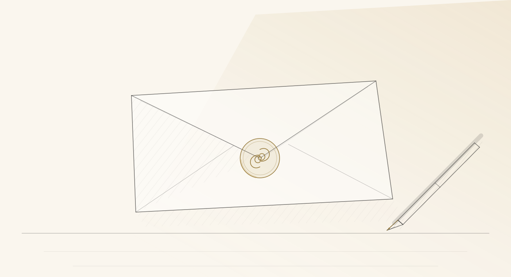

Compilare un testamento con noi è un gesto di pochi minuti. Ci ispiriamo a una strategia adottata con successo nel Regno Unito, il modello EAST — Easy, Attractive, Social, Timely — che favorisce l'adozione di comportamenti virtuosi: rendere il testamento solidale semplice significa ridurre le difficoltà burocratiche, agevolarne la compilazione e far crescere la cultura del dono. La Fondazione è qui per aiutarti in questo.
Vuoi condividere la tua storia? Vuoi conoscere la storia di chi ha già fatto questa scelta? Vuoi iniziare un percorso biografico con uno dei nostri consulenti, per capire meglio che cosa vuoi davvero donare e quale può essere il tuo valore nel futuro? Scrivici.
I tipi di testamento
1. Il testamento olografo: il più semplice
Deve essere scritto, datato (giorno, mese, anno) e firmato interamente a mano dal testatore — senza computer, macchina da scrivere o mano di terzi. Il suo vantaggio è la rapidità con cui si redige e si modifica. È consigliabile farne tre copie: una da conservare, una per il notaio, una per una persona fidata.
2. Il testamento pubblico: il più sicuro
È ricevuto dal notaio in presenza di due testimoni: il testatore espone le proprie volontà, che vengono messe per iscritto e firmate da testatore, testimoni e notaio, tenuti al più stretto riserbo. Questa forma protegge dai rischi di falsificazione, perdita o distruzione, perché l'atto è redatto dal notaio e conservato nel suo studio; una copia è registrata nel Registro generale dei testamenti, che lo rende rintracciabile anche senza conoscere il notaio.
3. Il testamento segreto: il più intimo
È redatto e chiuso in una busta sigillata, consegnata al notaio alla presenza di due testimoni: né il notaio né i testimoni ne conoscono il contenuto, che resta riservato fino all'apertura. Può essere scritto anche al computer o da terzi, ma deve essere firmato dal testatore.
Modificare il testamento
Il testamento può essere modificato o revocato in qualsiasi momento. Si può sostituire un testamento olografo con uno pubblico, e viceversa. Per le modifiche minori si può aggiungere un codicillo: un'aggiunta che integra o modifica le volontà espresse in precedenza. Per essere valide, le modifiche a un testamento olografo vanno scritte di proprio pugno, datate e firmate di nuovo.
La libertà del come: le DAT e il fiduciario
Al tuo testamento puoi affiancare le Disposizioni anticipate di trattamento (DAT), dette anche testamento biologico, regolate dalla legge 219/2017. Con le DAT una persona maggiorenne e capace di intendere e di volere esprime in anticipo le proprie volontà sulle cure: accertamenti diagnostici, scelte terapeutiche, trattamenti di sostegno vitale come la nutrizione e l'idratazione artificiali. Hanno effetto quando non si è più in grado di autodeterminarsi.
Si redigono per atto pubblico, per scrittura privata autenticata da un notaio, oppure per scrittura privata consegnata di persona all'ufficio dello stato civile del proprio Comune; sono esenti da bollo e da ogni tassa; si possono revocare o modificare in qualsiasi momento, con le stesse forme. Puoi indicare un fiduciario — la cosiddetta delega sanitaria — cioè una persona di fiducia che faccia le tue veci con i medici e faccia valere la tua volontà. Le DAT sono inserite nella Banca dati nazionale del Ministero della Salute, accessibile ai medici in caso di necessità.
Se una malattia cronica, progressiva e invalidante è già presente, lo strumento complementare è la Pianificazione condivisa delle cure (art. 5 della stessa legge): un dialogo continuativo tra il paziente, il medico curante e, se lo desidera, i familiari o il fiduciario, per definire insieme un percorso di cura proporzionato alle fasi della malattia.
Esprimi le tue volontà in merito alle cure di fine vita.
La Fondazione ha preparato un fac-simile per le DAT, da compilare e portare al notaio o al Comune: scarica il modulo (PDF). È una bozza in lettura: non sostituisce il colloquio con il tuo medico.
Vuoi saperne di più, o parlarne con un medico preparato? Siamo qui per te: contattaci.
Le domande che un testamento aiuta a sciogliere
- Chi prenderà le decisioni in caso di un incidente grave?
- Chi vorresti che si prendesse cura del tuo animale, in caso di morte improvvisa?
- Se entrambi i coniugi mancassero insieme, chi dovrebbe ereditare? E in caso di morte improvvisa, tutto al coniuge superstite, o preferisci che erediti anche qualcun altro?
- Come desideri che vengano accuditi i tuoi figli, se mancassero entrambi i genitori?
Chi lascia, e perché. Un sondaggio italiano sul lascito solidale — «La prima cosa bella: cosa rende bella la vita e cosa far durare per sempre», del Comitato Testamento Solidale — racconta che ciò che si vorrebbe durasse per sempre sono i legami affettivi (67,7% delle indicazioni) e il sentirsi una brava persona (45,5%); che per lasciare un ricordo di sé quasi un intervistato su quattro pensa al lascito solidale (24,4%), con un picco tra i 25 e i 34 anni (30%); e che tra gli oggetti da tramandare vince l'album di fotografie (44%), poi una lettera scritta a mano (37%). da verificare
Nel Regno Unito una parte sempre più significativa di chi fa testamento destina una quota a enti benefici: campagne di sensibilizzazione, agevolazioni fiscali, la fiducia nel non profit, e avvocati e notai che parlano del testamento solidale ai loro clienti. Secondo Rob Cope, direttore di Remember A Charity — un consorzio di oltre duecento enti benefici britannici — la chiave è stato il lavoro congiunto tra le organizzazioni, che ha trasformato il testamento solidale in una norma sociale. La Fondazione rema in questo senso. da verificare
Sei un'organizzazione non profit e vorresti collaborare? Scrivici. · Sei un notaio o un avvocato e vuoi lavorare con noi? Scrivici.
